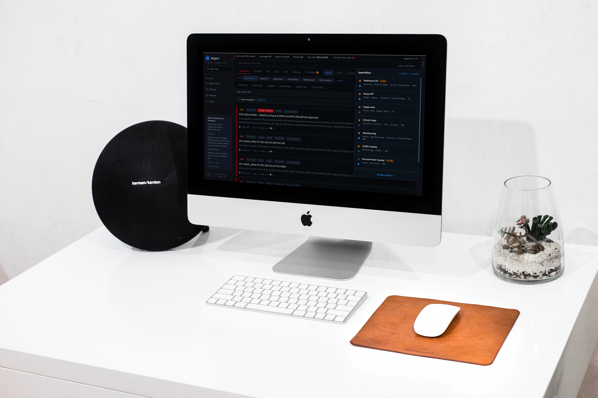
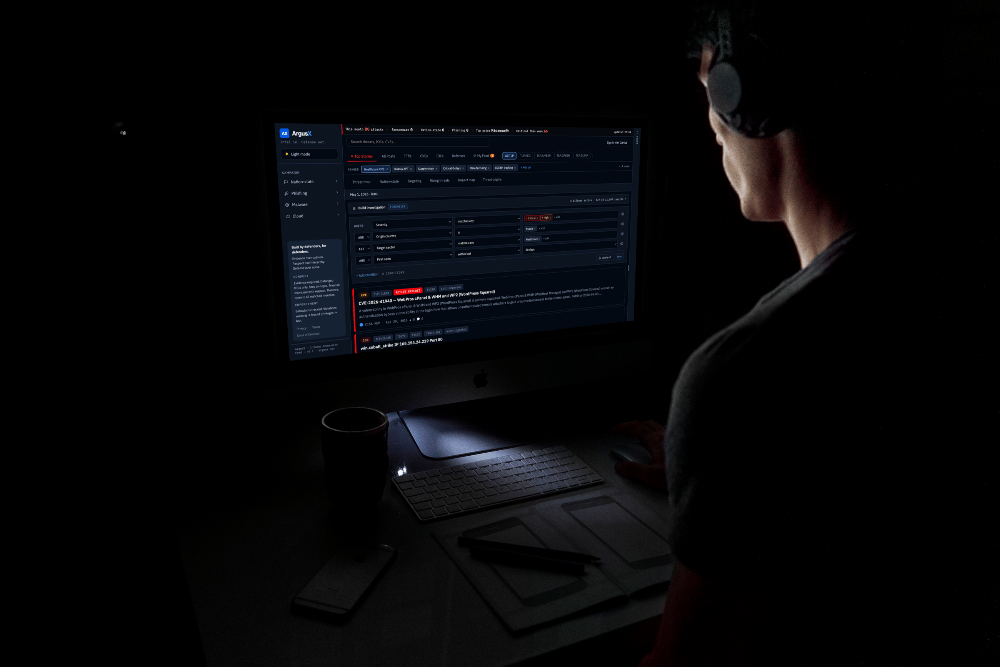
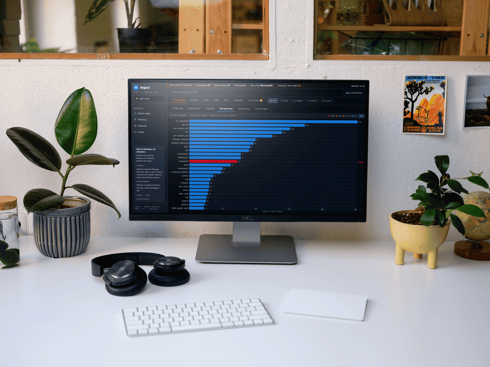
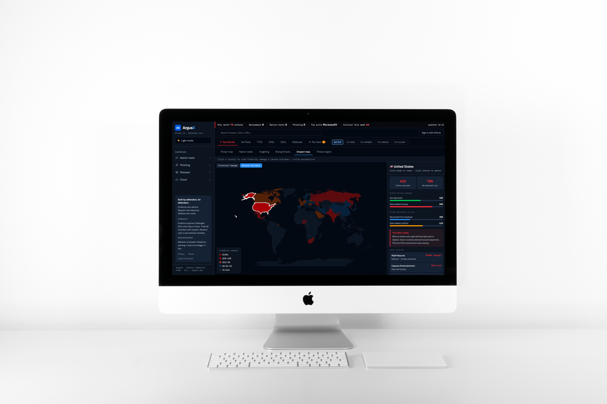

ArgusX is a community threat intelligence platform I designed and built from the ground up. The job: take an overwhelming flood of security data and turn it into something an analyst can actually read, triage, and act on. I designed every part — the feed, the filtering system, the data visualizations, the design system — and built it as both the designer and a member of the community it serves, so every decision came from how defenders actually work.
The underground is organized. Attackers share tools, zero-days, and infrastructure in real time, openly, and for free. Defenders aren't.
Real threat intelligence is fragmented across dozens of sources, and the structured, usable version costs $50K a year, pricing out exactly the people who need it most.
ArgusX is the free, structured layer that aggregates intelligence from a dozen-plus public sources and links every threat to the defense that stopped it.
I approach every product by understanding the whole system, and the people in it, before drawing a single screen. As a student inside the security community, I listened to what defenders actually valued — mentorship, sharing, evidence over opinion — and built those values into the product's structure rather than bolting a generic dashboard on top.
The result is an interface shaped around how analysts really work: scan fast, understand what matters, act, and help each other.
The core challenge was hierarchy: thousands of incoming items, and an analyst who needs to see what matters immediately. I designed a scannable feed with severity-coded cards, a live stats layer, and a four-level filtering system that narrows from content type, to classification, to campaign, to visualization.
Each level applies in sequence, so an analyst can move from the whole firehose to one specific question without losing their place.

Power users need to ask precise questions — severity is Critical or High, AND origin is Russia, AND target sector is Healthcare, AND first seen within 30 days — without writing a query language.
I designed a visual condition builder that reads like plain English, updates its result count live, and saves investigations users can pin and get alerted on. It's gated to the advanced tier, so depth is available to those who need it without overwhelming newcomers.

ArgusX serves everyone from a curious newcomer to a forensics analyst, so I designed the interface to reveal complexity as users earn it. Lower tiers get a clean, guided experience; higher tiers unlock the filter builder, saved investigations, multi-channel alerts, and sharing.
The same platform stays simple for one user and powerful for another — a permission model expressed through design, not just access control.
Beyond the feed, I designed analytical views that each answer a specific question a defender asks: what's accelerating right now, who is attributed to what, and whether paying a ransom actually works.
Each visualization turns raw telemetry into a clear, defensible story — rather than another wall of numbers.


As the sole designer, my judgment had to be legible to the engineers building from it. So every decision is documented with rationale — the filtering logic, the five-tier threat-color system with accessibility fallbacks (never color alone; hex chosen for contrast in both themes; explicit labels for red-green color blindness), and the state model for saved filters.
This is the part I'm proudest of: not just the screens, but the system and reasoning a team can extend without me in the room.
AI wasn't a feature I added to ArgusX; it was how I worked. I used Claude throughout the process, to prototype interfaces in code, to pressure-test design decisions, and to move from idea to working screen fast enough to actually feel the interaction before committing to it.
It also runs inside the product: Claude classifies every incoming post at insert time, tagging campaign type, actor attribution, and severity. So I was designing with AI and designing for an AI-driven system at the same time, which changed how I thought about trust, review, and where a human stays in the loop.
Working this way is now core to how I design. It lets me spend less time on mechanical craft and more on judgment: what to build, what to cut, and what a person actually needs to see.
I didn't design ArgusX from the outside. I use it. My published threat analyses come out of the same workflow the platform is built for: triage the feed, follow the connections between an actor, a campaign, and the infrastructure behind it, and turn that into a written assessment a defender can act on.
Designing for analysts working under time pressure isn't a persona exercise for me. It's my own workflow, which is why the product is shaped the way it is: the fastest path from a flood of signal to a decision I can stand behind.
My role went beyond design into building. I designed and built the platform end to end — the ingestion of a dozen-plus threat feeds, an AI classification layer that tags every incoming post by campaign type, actor attribution, and severity as it arrives, and the console analysts work in.
Working as both designer and builder meant every design decision was grounded in what the system could actually do, and every technical decision was made in service of clarity for the person at the screen.
The most instructive part of this project is a feature I stopped shipping. I built a relationship graph to show the connective tissue between a threat actor, a CVE, and a detection rule — and at scale it became an unreadable hairball. Hundreds of nodes, no clarity.
So I paused it. The real problem isn't drawing the connections; it's revealing them progressively, from a high-level view down to the specific relationship, without drowning the analyst. That's the problem I'm designing now. Knowing when something isn't good enough to ship is part of the job.
ArgusX crystallized how I work: I have to understand the whole system — and the people using it — before I can make it simple. It also sits exactly where I want to be: designing complex, high-stakes tools for technical users, in a domain I've spent this year going deep into as a practitioner.
The hardest and most rewarding part wasn't any single screen. It was turning an overwhelming, fragmented problem into something clear enough that a defender can act on it in seconds.
I design complex, data-heavy products for technical users, and I can go as deep as the problem needs.
Get in touch